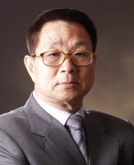

Tathagata, the man with the Third Eye (the eye of wisdom), has come.
Who is he?
Why did he have to come to us?
How did he attain Enlightenment?
Message from Tathagata
Dear Sir/Madam,
I have been travelling endlessly for the wishes of the human world.
I can tell various cases operating for the world to exist, which nobody has known so far.
I can tell what has existed in life and the effect of what happens in the life of individuals.
I am aware of the world of gods which has not been revealed by anyone.
I know the substance of eschatology which has been said to happen in this era.
I can introduce 'uitong' which will be a new visionary medicine. Uitong makes diagnoses and treatments for a great number of diseases possible, without using any medicines or medical instruments.
I can answer to a wide range of problems in the human world and I can provide the solutions on the spot.
I hope that my activities will be helpful to many people and sincerely request your verification of my truth.
Sincerely yours,
Tathagata

Note From the Website Publisher
I heard that on April 6, 1942, self-proclaimed enlightened master Tathagata was born in what is now South Korea. I was informed in 2006 by a society member that he passed away (years earlier than we expected) on August 21st, 2008 in Malaysia. There are photos linked from 2008 at the bottom of this page that appear to show his location of interment (you must click through the landing page): http://tathagata.info
I, the publisher, starting and operating this site independently, have compiled this material to serve as a way to collect and publish all known content left for us by Tathagata, focusing on his original text and spoken content, primarily. Other material like video is scattered around the Internet.
Disclaimer: Tathagata spoke virtually no English, aside from the odd phrase or word here and there. So all of the contents from him which are here, aside from those under "New Translations", have been translated from Tathagata's native language of Korean into English by members. I just copied them as-is, although in specific cases in the last decade, I have helped produce some new translations after Tathagata's passing. It should be understood that reading any translations can only serve as a basic introduction to the true meanings of his teachings. Reading them in Korean with full context is said to be necessary. The other contents under "New Translations" were produced in collaboration with certain people who were previously totally unfamiliar with Tathagata and merely spoke Korean natively, and are translations which were produced after Tathagata died, and therefore were not checked with him. Nor have they been confirmably verified much with individuals like his disciple Ven. Soyun. Everything published here should be considered very carefully and your initial impression of its meaning should not necessarily be believed, and should in fact be confirmed again and again.
From personal experience, despite having poured over his words for about a decade without much new dawning on me for a long while, it was only after a major wake up call in my personal life that I began to read many of the phrases (such as those referencing greed and the value of life in Traveler Chapter 8. 'Law of Cause and Effect' and 'What is Life?') with more than superficial understanding. Guidance from historical saints like Jesus Christ indicated that one should turn and question inward. In the past I had been similarly guided by the people around Tathagata who I knew, to repeatedly confirm things myself, because, as I was taught, those without enlightenment do not perceive reality as it really is. Taking this attitude with respect to confirming the reality of how we think, feel, judge, react, believe, perceive, understand, etc. must only be to our own benefit individually. There is a connection between the activities of our consciousness and the path of eternal life. One question might be, by what process or activity can we illuminate that path? "To improve yourself, awaken from your idealism." ... "You should listen to me with the focus on how you will see this world." ... "There will be people who fail to understand me even if I repeat my message 100 times while at the same time, there will be others that will try to follow and achieve it by coming to an understanding upon hearing the message just once. That is due to the foundation. You must try on your own to build and change your own foundation. That effort becomes useless when your foundation does not want it." (Quotes are phrases which I believe I have read or heard from him.) Edited Q3 2025.
All contents here are Copyright (c) 2006-2025 Teaching of Tathagata and (c) 1984 - 2025 Enlightenment of Tathagata, as applicable.
All Rights Reserved.
Any use of the articles or any other content whatsoever contained in this website is entirely prohibited under the Digital Millennium Act. You may use small quotes from the articles provided you state that these are the words of Tathagata and you leave a full HTML link to the article page on the website that contains it on this site or the original Enlightenment of Tathagata website.
If you would like to contribute to improve this application's stability, performance, or featureset please submit a Pull Request to https://github.com/TathagataTranslated/TathagataTranslated-app-rn. Or if you would like a translation which you made to be published here then you can submit them to us as well for consideration.
If you would like to help spread Tathagata's enlightenment, many people would also greatly appreciate your effort to link to an original 'Enlightenment of Tathagata' webpage on appropriate and relevant forum threads across the internet (i.e. on topics such as Karma and Destiny) in order to increase its search ranking so that more people can discover the existence of such a person and such information via search terms like 'enlightenment'. That was personally how this publisher found out about Tathagata. Most of this content was originally published on that website and in this publisher's opinion it represents one of the best and most close-to-life introductions to Tathagata's activities that remains despite minor changes after His passing. For more guidance on this check out the page Paul Iddon put together on promotion: https://web.archive.org/web/20110619083837/http://www.members.tripod.com/tathagata2000/promote.htm. (Note: The original page seems to have gone offline after many years. )
This publisher is sometimes able to check emails at enlightenmentappemails _at _ gmail _dot_ com in case of questions or notices.